Page 1 / 原始页码 197
第 4 篇 繁殖与遗传
为什么种群中某些基因有不止一个的常见等位基因

正在分裂的细菌细胞 随着种群生长，突变产生基因变异。新变异将保持下去，还是被自然选择淘汰？
当孟德尔做豌豆杂交实验时，他知道预想中这种豆科植物的样子：绿叶、光滑种子的个型植物。但如果所有的植株都是这样，他就不可能发现遗传定律——绿色豌豆与绿色豌豆之间的杂交不会产生可见的差别，也就不会反映出 3:1 的基因分离比。孟德尔所研究的不同性状位点基因——黄叶、白花和皱缩种子——都是通过收集新奇种子而保留下来的少数“意外”。在自然界，孟德尔没有遇到过这种特殊的豌豆。
在孟德尔工作被重新发现的1900年以前，达尔文就对自然种群中不同等位基因显得很少提供了一个现成的解释。自然选择简单地冲刷着种群，每一代中适应较差的等位基因都变得更少。尽管像在豌豆这样的有性生殖生物中重组会以一种有趣的方式使这一过程变得复杂，但像细菌这样无性生殖的生物可以预见选择会十分敏感。如果没有自然选择起作用，细菌种群将会每个基因上都只剩下一个最好的基因成分，成为一个均一的克隆。
为什么种群中总是有变异？1932年，著名的遗传学家 Herman Müller 提出的“经典模型”认为，在无性生殖的生物种群中，基因变异是一种暂时的过渡状态，随机突变产生的新变异通过选择而确定取舍。除了周期性地经历清除不利基因的短暂时期外，种群将保持遗传的稳定性。
消除变异是一个非常直接的过程。在 Müller 经典模型的设想中，排除适应较差基因时，将按最早由 Gause 提出的“竞争排斥原理”进行：新变异一旦出现，就由自然选择权衡其是否有价值，只有胜负，没有平局。一个基因版本在种群范围内广泛传播，另一个则被淘汰。
Müller 的经典模型于是有了一个直接的预言：自然界中大部分无性生殖的生物种群大部分时间在遗传上是均一的。但观察到的结果并不都是这样，大多数物种，包括像细菌这样无性生殖的自然种群中都有许多很普通的变异——称为“多态性 (polymorphism)”。
那么这些变异是怎么来的？自然环境在时间和空间上的变化可以用于解释这种多态性的产生。自然选择在一个特定的时间地点偏好某一种形式，而在另一个特定的时间地点又偏好另一种形式。简单地说，不同的选择导致了多态性。
是这个原因吗？如果种群生活在恒定均一、不随时间地点而改变的环境中，就真的不可能有超过一个的变异吗？理论上是这样的。
研究微生物群落的生物学家开始报道说细菌并不遵循 Müller 的理论，由一个细胞在单单未被系统化的环境中培养产生的细菌菌落迅速产生了多态性。
有一种途径可以调和理论与实验的矛盾，也许群中变异的个体能够相互作用。Müller 的理论假设每个个体都经历了选择的独立考验，但如果不是这样呢？如果不同种类的个体互相帮助又会有什么结果？如果相互作用对彼此都有利（生物学上称为互利共生，mutualism）或对一方有利（生物学上称为共栖，commensalism），种群中变异的稳定共存将成为可能。本质上说，合作能使竞争的效果达到平衡。
实 验
为研究这一诱人事件的可能性，密歇根大学的 Julian Adams 及其合作者着手观察长在均一环境中细菌的代谢能力多态性是否会自发发展。
他们选择了大肠杆菌 (Escherichia coli) 为实验对象，该细菌已被广泛研究且实验室条件下的生长机制已经很清楚了。这都大利 (在恒化器中能培养数百代。恒化器是用来装液体培养基的大型容器，一小部分培养液不断流出，同时不断有等量的新鲜培养基流入以补充培养液流出的消耗。大肠杆菌 E. coli 的生长受培养基中剩余的可供其利用的葡萄糖含量的限制。
Page 2 / 原始页码 198
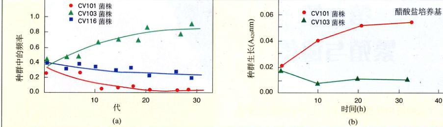
维持稳定的多态性 (a) 三个新菌株在培养中出现并被保存下来。(b) 两个菌株在含醋酸盐的培养基上生长。CV103 菌株能分泌醋酸盐，而 CV101 菌株在以醋酸盐为唯一碳源的培养基上长得很好。种群生长情况用液体培养基的浑浊程度变化，即波长 420 nm 的光吸收值 (A420nm) 增加来衡量。
研究者将 E. coli 的 JA122 菌株接种到葡萄糖含量受限制的培养基中，连续培养了 773 代，然后吸取一小部分样品分析其中存在的新菌株。样品细胞中存在任何的变异都表明了多态性的提高。
为了检测样品中生长细胞代谢水平的变异，Adams 领导的小组分析了其他变种对葡萄糖的吸收量和醋酸盐浓度。通过这些生化参数，研究者可以确定不同菌株是否占据不同的代谢“小生境”——也就是说，是否用不同方式利用代谢环境。小生境可以通过观察有氧发酵的一般产物，即醋酸盐和甘油这两中培养基中出现的 E. coli 代谢副产物来区别。
为进一步分类菌株，将会两个菌株的细菌培养物成批进行培养，以分析它们之间的相互作用。
结 果
773 代大肠杆菌 E. coli 中总共发现了3个变种，每个在连续培养中都保持在稳定的水平。显然即使生长在简单均一的环境中，最初均一的细菌种群也会出现多态性。
当它们混合在一起生长并允许竞争时，并不像理论预测的那样，一个菌株生存下来而另外两个菌株灭绝。相反，三个菌株 CV101、CV103 和 CV116 都一直存在着（见上图 a）。
随后对三个菌株的差异进行了分析。CV103 有最高的葡萄糖吸收率，产生多醋酸盐（葡萄糖有氧发酵的终产物）。这一差别重要吗？为此，将菌株 CV103 和 CV101 共培养，它们都保持稳定的生长水平，第三个菌株 CV116 对保持它们的生长不是必须的。
CV101 与 CV103 有什么不同呢？CV101 可以在过滤的培养过 CV103 的培养液中生长，反过来让 CV103 在过滤的培养过 CV101 的培养液中生长则不行。这说明 CV103 分泌了某种使 CV101 能够生长的物质。难道 CV101 能以 CV103 产生的醋酸盐为碳源？
为验证这一可能性，让 CV101 和 CV103 在以醋酸盐为唯一碳源的培养基上生长。这一实验的结果在上图 b 中，表明 CV101 以醋酸盐为碳源可以长得很好，而 CV103 则需要另外的碳源如葡萄糖。
这一结果说明这两个菌株保持稳定多态性水平的原因在于，它们已经进化出了不同的适应能力，使得它们能通过占据不同的小生境而共存。一个菌株 (CV101) 因为能利用另一个菌株 (CV103) 释放的代谢副产物而在种群中保持稳定。
Page 3 / 原始页码 199
第 11 章 细胞分裂
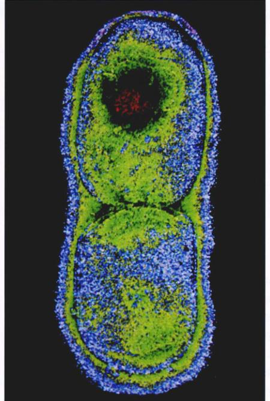
图 11.1 细菌中的细胞分裂 很难把粪便中的大肠杆菌想象得有多美丽，这里恰有一张生活在人的大肠及生物技术实验室的大肠杆菌照片，恰好捕捉到了其引人注目的分裂活动。
所有的生物体——细菌、鳄鱼、草地上的野草——都在生长繁殖，从最小的到最大的，所有的物种都产生与自身相似的后代，并传递决定其特征的遗传信息。在这一章中，首先把我们要对遗传的兴趣集中到观察细胞是如何分裂的问题上（图 11.1）。细胞繁殖的机制和这种机制的生物学影响在地球上的生命进化过程中已经发生了显著变化。
Page 4 / 原始页码 200
11.1 细菌分裂比真核生物简单得多
11.1.1 原核生物的细胞分裂
缺少细胞核的原核生物细菌，其细胞分裂只包含一个简单的过程，称为二均分裂 (binary fission)。在这个过程中，细胞分裂成相同或几乎相同的两半（图 11.2）。遗传信息，或称基因组 (genome)，在细胞生命活动的早期就进行复制，以一种环状双链 DNA 分子的形式存在。以大肠杆菌 (Escherichia coli) 为例，其 DNA 分子完全拉直的长度可以达到细胞本身的 500 倍。

图 11.2 裂殖 (40 000 ×) 细菌通过一种简单的分裂方式进行分裂。注意在 2 个细胞之间形成的新细胞质膜。
DNA 与细菌原生质膜胞质一侧某一点结合，在 DNA 分子中一种称为复制起点 (replication origin) 的特殊部位上，一组由 22 种蛋白质组成的复合体启动了 DNA 复制过程（图 11.3）。当这些酶沿着环状 DNA 移动一圈后，细胞就拥有基因组的两份拷贝了。而且这些“姊妹”基因组都并排附着在原生质膜上。
细菌细胞生长到原来大小的两倍左右后将引起细胞分裂的开始。现有的大量事实表明，在这一过程中两个“姊妹”染色体也随过程的进行，研究者现在两个“姊妹”基因组之间的部位开始积累组成新质膜和细胞壁的物质。质膜在两基因组之间生长，最终达到细胞中心，将之一分为二。质膜形成于两个基因组之间，确保了每个子细胞都保留有一个基因组，最后，新细胞壁在质膜周围形成。

图 11.3 细菌 DNA 是如何复制的 组成细菌基因组的环状 DNA 分子（蓝色）复制开始于一点，称为复制起点。复制酶从此处开始向两个方向移动，复制双链中的每一条（新链为红色）。当复制酶在另一端相遇时，复制就结束了。
11.2 染色体高度有序的结构
11.2.1 染色体的发现
染色体是 1882 年由德国胚胎学家 Walther Fleming 在蝾螈幼虫快速分裂的细胞中首次发现的。当 Fleming 通过现在看来是十分简陋的光学显微镜观察细胞时，他看见了细胞核里一些微小的线状物正在纵向的分裂，Fleming 称之为有丝分裂 (mitosis，来源于希腊语中的 mitos，意思是“线”）。
Page 5 / 原始页码 201
染色体数目
自从染色体首次发现以来，它在所有的真核生物细胞中被陆续发现，其数量随物种不同有很大差别。少数几种生物，如澳大利亚蚂蚁 Myrmecia、纤细单冠菊 (Haplopappus gracilis)（一种生长在北美沙漠中的向日葵亲缘）以及青霉菌 (Penicillium) 都只含有一对染色体，而有些蕨类植物却有超过 500 对染色体（表 11.1）。大多数真核生物的体细胞中含有 10~50 条染色体。
表 11.1 各种真核生物的总染色体数目
| 类 群 |
总染色体数目 |
类 群 |
总染色体数目 |
类 群 |
总染色体数目 |
| 真菌 |
|
植物 |
|
脊椎动物 |
|
| 脉孢菌 (单倍体) |
7 |
纤细单冠菊 |
2 |
负鼠 |
22 |
| 酵母菌 |
16 |
豌豆 |
14 |
青蛙 |
26 |
|
|
玉米 |
20 |
小鼠 |
40 |
| 昆虫 |
|
面包小麦 |
42 |
人 |
46 |
| 蚊子 |
6 |
甘蔗 |
80 |
黑猩猩 |
48 |
| 果蝇 |
8 |
问荆 |
216 |
马 |
64 |
| 蜜蜂 |
32 |
瓶儿小草蕨 |
1262 |
鸡 |
78 |
| 蚕 |
56 |
|
|
狗 |
78 |
每个人体细胞含有 46 条染色体，组成基本两两一致的 23 对（图 11.4）。每条染色体都含有几百或数千个基因，这些基因对于决定人体的发育和生理功能具有重要作用。正是由于这个原因，拥有所有的染色体是生存所必需的。人类即使只失去了一条染色体（这一状态称为单体），大多数情况下也会在胚胎发育中死亡，额外复制了一条染色体（称为三体）也一样。除了最小的几条染色体，其他染色体出现三体都是致命的，即使三体发生在最小的 21 号染色体，将比正常情况发育缓慢且出现智障，这种情况叫“唐氏综合征”。
11.2.2 染色体的结构
自从染色体被发现以来，我们对染色体的结构和组成有了许多的了解。
1) 染色质的组成
染色体由染色质 (chromatin) 组成，染色质是 DNA 和蛋白质构成的复合物，一般约含 40% 的 DNA 和 60% 的蛋白质。很多 RNA 也与染色体有联系，因为染色体是 RNA 的合成场所。一条染色体中的 DNA 是一条贯穿染色体全长的双螺旋长链，一条典型的人类染色体 DNA 包含 1.4 × 10⁸ 个核苷酸，如果把每个核苷酸看作一个单词，每页约含 500 个单词计算，这条染色体所能储存的信息量可以将 280 本 1000 页的书填满；此外，将一条染色体中的 DNA 链拉直成一条线，将有约 5 cm (2 英寸) 长；将 DNA 链放入细胞核中就相当于将一个足球场的长度填进一个棒球里——而且那仅仅只是 46 条染色体中的 1 条。然而，细胞中 DNA 是螺旋的，所以将其放入更小的空间是可能的。
2) 染色体螺旋
如此之长的 DNA 是如何紧密地螺旋旋起来的呢？如果我们轻柔地弄破真核细胞的核，然后用电子显微镜观察 DNA 分子（图 11.5），可以发现它就像一串连在一起的珠子。
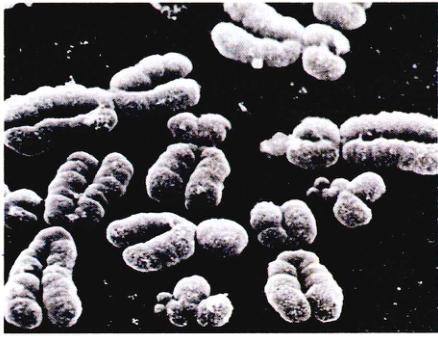
图 11.4 人类染色体 这幅图片 (950 ×) 展示了人类染色体在核分裂前的状态。每个 DNA 分子都已经复制，生成完全相同的副本，由着丝粒相连。
Page 6 / 原始页码 202
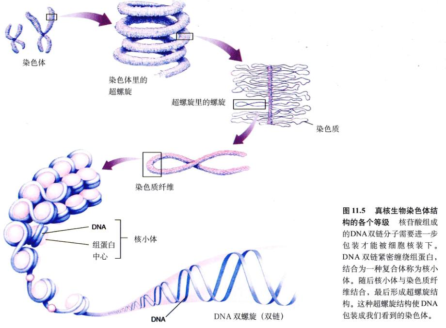
图 11.5 真核生物染色体结构的各个等级 核苷酸组成的 DNA 双链分子需要进一步包装才能被细胞核装下。DNA 双链紧密缠绕组蛋白，结合为一种复合体称为核小体。随后核小体与染色质纤维结合，最后形成超螺旋结构。这种超螺旋结构将 DNA 包装成我们看到的染色体。
DNA 双链的每 200 个核苷酸缠绕着由 8 个组蛋白组成的复合物核心，称为核小体 (nucleosome)。与大多数带负电的蛋白质不一样，由于大量含有两种碱性氨基酸——精氨酸和赖氨酸，组蛋白是带正电的，因此能吸引 DNA 分子中带负电的磷酸根，于是组蛋白核就像磁体一样促进并引导 DNA 螺旋。一串核小体进一步缠绕在一起，形成更加有序的螺旋结构，称为超螺旋。
高度凝缩的染色质称为异染色质 (heterochromatin)，其中一些始终是凝缩的，以至于这些 DNA 始终不会被表达。其余的染色质称为常染色质 (euchromatin)，在细胞分裂时发生凝缩，此时紧密包装使染色体易于移动，而其他时候，常染色质以一种开放结构存在，其上的基因能够被表达。不过目前我们对于细胞末分裂时染色质包装方式的认识还未超过核小体水平，这也是现在集中研究的一个课题。
3) 染色体核型
染色体在形态上可以有很大的不同，如大小、染色特性、着丝粒 (一种所有染色体中都存在的结构) 的位置、着丝粒两侧两臂的长度、两臂上凝缩区域的位置。一个个体所拥有全部染色体的特定排列称为核型 (karyotype)，核型显示了物种间的明显差异，有时甚至可以表现同一物种中个体间的差异。
为了检测人的核型，研究者分别收集血液、羊膜液或其他组织的细胞样品，加入某种化学物质诱导其中的细胞分裂，然后在染色体高度凝缩、最易识别的状态存在时，加入另一种化学物质使细胞分裂停止，随后将细胞弄破，使其内含物（包括染色体）流出并散下来，为了使对核型的检测容易进行，常常把染色体拍照下来，然后按照染色体的轮廓将其从照片上剪下后进行排序（图 11.6）。
4) 一个细胞中含有多少条染色体
除去配子 (gamete) (卵细胞或精子) 和一些特别的组织，人体中的每一个细胞都是二倍体 (diploid) (2n)，即细胞包含全部 23 种染色体的两套几乎完全相同的拷贝，总共 46 条染色体。
Page 7 / 原始页码 203
单倍体 (haploid) (1n) 配子只含有这 23 种染色体的一个拷贝，而特定组织含有特别数量的染色体，如许多肝细胞有两个细胞核，成熟的红细胞是无核的。体细胞中每种染色体的两个拷贝称为同源染色体 (homologous chromosomes或homologous)。在细胞分裂前，每条同源染色体开始复制，产生两个相同的姊妹染色单体 (sister chromatid)，由着丝粒 (centromere) (所有真核染色体中都可以找到的一个凝缩部分) 相连（图 11.7）。因此，在细胞分裂开始时，人的一个体细胞中含有 46 条复制的染色体，每条染色体含有两条由着丝粒连接的姊妹染色单体。我们说含有 46 条染色体，而不是 92 条，是因为按习惯染色体的个数由着丝粒的个数决定。
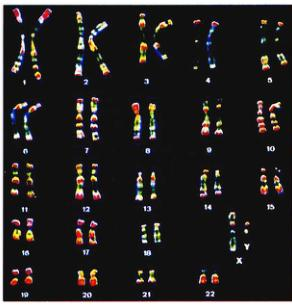
图 11.6 人类核型 人体 23 对染色体在大小及着丝粒的位置方面有很大不同。在制片中，染色体经过特殊染色，以表现它们在组成成分上的不同，并使之能更清楚地互相区别。
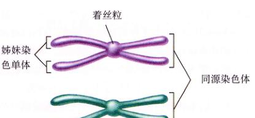
图 11.7 同源染色体与姊妹染色单体的不同 同源染色体是一对相同的染色体，如 16 号染色体，姊妹染色单体是一个染色体经过 DNA 复制后的两个副本，由着丝粒相连。
11.3 有丝分裂是细胞周期的关键阶段
11.3.1 细胞周期的各个时期
真核细胞有比细菌更大更复杂的基因组，因此细胞分裂中基因组的两组副本平均分配到子细胞的过程需要根本改变。这一分裂过程图解称为细胞周期 (cell cycle)，由 5 个时期组成（图 11.8）。
1) 5个时期
G1 期是细胞的主要生长期，对于多数生物体，这一时期涵盖了细胞生命历程的主要阶段。S 期是细胞合成基因组副本的时期。G2 期是第二个生长期，在这个时期，线粒体及其他细胞器开始复制，染色体开始凝缩，微管开始组装为纺锤体。G1 期、S 期和 G2 期共同组成间期 (interphase)，即细胞周期过程中两次细胞分裂之间的时间期。
M 期是微管器 (microbubular apparatus) 组装并与染色体结合，使姊妹染色单体分离的时期，称为有丝分裂 (mitosis) 期，这个过程是两个子基因组分离的重要一环。我们将讨论动物和植物的有丝分裂，其过程相差不大（只在真菌和一些原生生物中稍有不同），尽管有丝分裂是一个连续过程，但习惯上将其细分为 4 个阶段：前期 (prophase)、中期 (metaphase)、后期 (anaphase) 和 末期 (telophase)。
C 期是细胞质分裂产生两个子细胞的时期，称为胞质分裂期 (cytokinesis)。在动物细胞中，微管纺锤体帮助下定位的环状肌动蛋白丝不断地紧缩，将细胞缢裂为二。而对于有细胞壁的细胞，如植物细胞，则在两细胞间形成细胞板。
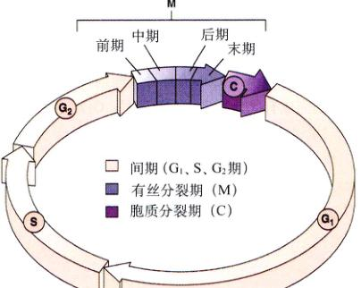
图 11.8 细胞周期 这个环表示了培养的人体细胞的一个 22h 周期。G1 期表示细胞周期中的主要生长阶段，S 期即基因组复制阶段，G2 期是第二个生长阶段。
Page 8 / 原始页码 204
2) 细胞周期的时间
对于不同的生物体，完成一次细胞周期的时间有很大差别，生长中的胚一般可在 20min 内完成一个细胞周期，已知的最短动物细胞分裂周期发生在果蝇幼虫内（仅 8min）。这些细胞是在没有生长的情况下快速复制 DNA 并进行简单的细胞核分裂，在这个周期中，一半是 S 期，一半是 M 期，几乎没有 G1 和 G2 期。这是由于成熟细胞需要时间生长，其时间比胚胎组织细胞周期要长得多。通常，一个正在分裂的哺乳动物细胞完成细胞周期需要约 24h，而有些细胞，如人肝脏内某些特定细胞则需要持续一年以上。在细胞周期中，细胞的生长不但贯穿整个 G1 和 G2 期（即所说的“间隙”期），因为它们分隔了 S 期与 M 期），还包括 S 期。而 M 期只含有约 1h，仅占整个周期的一小部分。
各生物体或组织细胞周期时间的差异多数体现在 G1 期，细胞通常在 DNA 复制前止步于 G1 期而进入休眠的 G0 期 (G0 phase)。细胞可以在这个时期保持数日或数年，直到细胞分裂重新开始。任何时候动物体内大多数细胞都处于 G0 期。有些细胞，如肌肉细胞、神经细胞是永久不变的；而其他如肝细胞等则在人体受伤害后才进入 G1 期。
11.3.2 间期：为有丝分裂做准备
由 G1、S、G2 期组成的有丝分裂间期中发生的事件，对于成功完成有丝分裂是十分重要的。G1 期是细胞主要的生长期，在 S 期每条染色体都将复制产生两条姊妹染色单体，它们由着丝粒 (centromere) 相连。着丝粒是染色体中紧密缢缩的一点，有着特殊的 DNA 序列，与一个称为动粒 (kinetochore) 的蛋白质盘相结合。这个盘就是帮助细胞分裂的纺锤丝结合位点（图 11.9），每种染色体的着丝粒都在特定的部位。
细胞的生长贯穿整个间期，G1 和 G2 期是生长活跃期，在这两个时期，蛋白质合成，新细胞器产生，而 DNA 的复制在 S 期进行。
染色体在 S 期复制后，仍处于完全伸展的非螺旋态，在光学显微镜下是不可见的。在 G2 期内，它们进行漫长的凝缩 (condensation) 过程，紧密地螺旋。特殊的动力蛋白 (motor proteins) 与染色体在有丝分裂早期快速的凝缩有关。也是在 G2 期，细胞开始组装用于将染色体拉到相反两极的装置。在动物细胞中，一对称为中心粒 (centrioles) 的微管组织中心 (microtubule organizing centers) 进行了复制。所有的真核细胞还合成了大量形成微管的微管蛋白 (tubulin)。
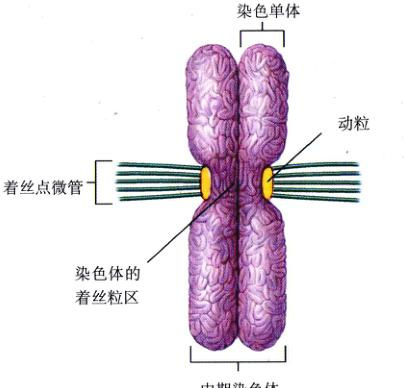
图 11.9 动粒 在中期的染色体中，着丝点微管被固定在着丝粒的蛋白上。
11.3.3 有丝分裂期
1) 前期：有丝分裂器的形成
当 G2 期开始的染色体凝缩达到单个染色体在光学显微镜下清晰可见时，有丝分裂的第一阶段——前期 (prophase) 开始了。由于在前期继续凝缩，开始以细丝状出现的染色体在前期结束前变得非常粗大。当含有 rRNA 基因的那部分染色体凝缩后，核糖体 RNA 的合成也停止了。
(1) 纺锤体器的组装 作为以后分离姊妹染色单体工具的微管器，其组装在前期也继续进行。动物细胞中，G2 期生成的两对中心粒在前期之初开始相互分离，在它们中间形成称为纺锤丝的微管轴，当中心粒到达细胞两极时，就在两极之间建立起了称为纺锤体器的微管桥。在植物细胞中，尽管没有中心粒，但类似的微管桥也在相对的两极间形成。
Page 9 / 原始页码 205
在纺锤体器形成的同时，核膜破裂，内质网将其成分重吸收。随后微管纺锤丝完全延伸通过整个细胞，从一极到另一极，确定了细胞下一步的分裂面，即通过细胞中心与纺锤体器成直角的平面。
在动物细胞有丝分裂中，中心粒到达细胞两极后向质膜发出一组放射状微管丝，称为星体 (aster)。星体的功能尚不完全清楚，可能在中心粒和质膜间起支撑作用，且能将纺锤丝收缩时使微管结合位点更牢固。植物细胞由于有坚固的细胞壁，故不形成星体。
(2) 连接姊妹染色单体到相对的两极 每条染色体拥有两个着丝点，每一个都连接在一同姊妹染色单体的着丝粒区域上（图 11.9）。随着前期的进行，第二组微管在细胞两极与着丝点之间生成，这些微管将姊妹染色单体的着丝点与纺锤体的两极相连，由于微管从两极延伸到对面的着丝点，所以将两条姊妹染色单体分别与不同的两极相连。这一安排对有丝分裂过程是绝对关键的，任何在微管位置产生的错误都将是灾难性的，比如，使着丝粒的两边都与同一极相连，将导致姊妹染色单体分离的失败，因此它们最终将在同一个子细胞中。
2) 中期：着丝粒的排列
有丝分裂的第二阶段——中期 (metaphase)，染色体将在细胞中央排列，就像赤道环绕地球一样。在显微镜下可以看到，染色体在细胞内排列成环状（图 11.10）。于是就存在这样一个假想平面，它通过这个环与纺锤体轴垂直，称为赤道板 (metaphase plate)。赤道板不是实际存在的结构，但对以后细胞分裂轴的形成有指导作用。由于着丝粒上着丝点所附着微管的定位效应，所有染色体都在赤道板上一字排开（图 11.11）。这时，着丝粒整齐地排列成环状，与两极成等距，同时微管向相对的两极延伸，呈纺锤的形状，因此称为纺锤体。这就是中期结束的标志。
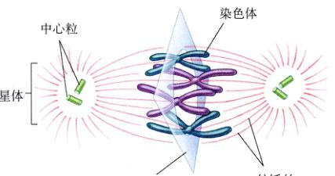
图 11.10 中期 在中期，染色体排列在纺锤体中间呈环状。
3) 后期和末期：染色单体的分离及核的重建
在有丝分裂的所有阶段中，后期 (anaphase) 最短却最引人注目。它始于着丝粒的分裂，每个着丝粒一分为二，使姊妹染色单体各自分开。所有染色体着丝粒同时分裂，不过促发这种同时性的机制目前仍未知。
由于相互分离，姊妹染色单体被迅速地拉向连接其着丝点的细胞两极。在这一过程中，由微管引发的两种形式的运动同时发生。
一方面，由于固定在两极上的微管纺锤丝在细胞中心相互滑动，使得两极分开（图 11.12）。由于另一类微管将染色体与两极相连，染色体也就自然分开了。如果细胞是由有伸缩性膜包围的，则这种延伸是可见的。
另一方面，由于连接着丝粒与两极的微管开始变短，着丝粒向两极移动。这一变短过程不是收缩，微管不会变粗，相反，微管蛋白亚单位被形成中心 (organizing center) 从微管靠着丝点的一端去掉，随着微管蛋白亚单位的移除，连接染色单体的微管蛋白逐渐解体，染色单体被拉到细胞两极。
当姊妹染色单体在后期分开，复制后基因组的准确拆分——有丝分裂的关键环节——就结束了。在末期 (telophase) 纺锤体器消失，微管分解成微管蛋白单体，以用作构建子细胞的细胞骨架。核膜形成，包围每一套染色单体，而这些姊妹染色单体现在也可以称为染色体了，因为它们有自己的着丝粒。不久染色体开始解螺旋，成为更加伸展的形式，使得基因可以表达。早期表达的基因之一是 rRNA 基因，导致了核仁的重现。
Page 10 / 原始页码 206
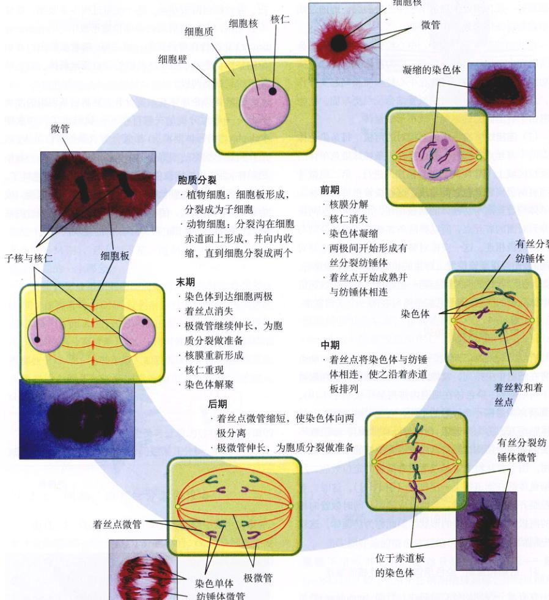
图 11.11 有丝分裂和胞质分裂 有丝分裂（两染色体组分离过程）分 4 个时期——前期、中期、后期和末期。随后是胞质分裂（分裂成两个独立细胞的过程）。图中，非洲血百合 Haemanthus katharinae 的染色体被染成蓝色，微管染成了红色。
Page 11 / 原始页码 207
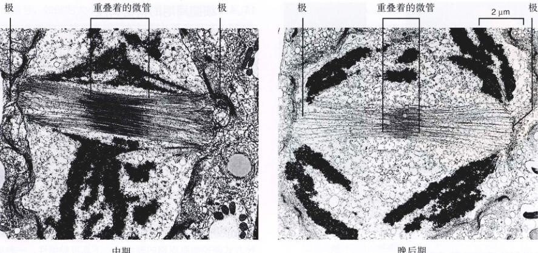
图 11.12 随着染色体的分离，微管相互滑过 以上是硅藻分裂的电子显微镜照片，当细胞由中期到后期，纺锤体逐渐伸长，其间微管的重叠明显减少。
在前期，微管将每对姊妹染色单体的着丝点与对应的纺锤体两极之一相连。在中期，由于着丝粒和纺锤体两极间微管的相互作用，染色体被拉到细胞中间形成环状。在后期，细胞的两极在微管的滑动下分开，而姊妹染色单体则由于连在上面的微管变短而被拉向两极。在末期，纺锤体消失，核膜重现，染色体中的基因开始表达。
11.3.4 胞质分裂期
随着末期结束，有丝分裂完成，真核细胞将复制的基因组均分到位子细胞两端的核中。同时，细胞器包括线粒体和叶绿体（如果有的话）也平均分配到两个将来会分离产生子细胞的区域。细胞器的复制发生在胞质分裂之前，一般在 S 期或 G2 期。细胞分裂并不是随着有丝分裂期的结束而完结，因为严格意义上的细胞分裂并未开始。细胞周期中真正的细胞分裂阶段称为胞质分裂期 (cytokinesis)，一般为细胞分裂成几乎相同的两半的过程。
1) 动物细胞的胞质分裂
在动物细胞及其他所有没有细胞壁的真核细胞中，胞质分裂是通过通过肌动蛋白丝收缩带的收缩实现的。随着肌动蛋白丝的相互滑动，收缩带直径减小使细胞缢缩，在细胞外围形成一圈细胞分裂沟 (图 11.13 a)。随着收缩的继续进行，沟越来越深，直到细胞被从中间缢裂为两半，这时细胞也就一分为二了 (图 11.13 b)。
2) 植物细胞的胞质分裂
植物细胞拥有坚固的细胞壁，无法通过肌动蛋白丝的缢裂一分为二，而是在其内部积累细胞膜成分，并使之与纺锤体成直角 (图 11.14)，形成的这种膜状分隔被称为细胞板 (cell plate)。细胞板不断向外生长，直到与质膜内表面接触并互相融合，从而将细胞一分为二。纤维素在新膜上积累形成两个新细胞壁，子细胞间的空间由果胶质逐步填塞，称为胞间层 (middle lamella)。
3) 真菌和原生动物的胞质分裂
在真菌和部分原生动物体中，核膜并不消失，有丝分裂在核内进行。只是在这些生物体中，在有丝分裂结束后核将分裂成两个子核，在胞质分裂期，两个子核分别进入不同子细胞中。这种独立的核分裂在植物、动物及多数原生动物的细胞周期中是没有的。
真核细胞经过胞质分裂，两个子细胞就都拥有了一个完整细胞的所有成分。有丝分裂确保了子细胞中含有全部染色体，但并有没有相同的机制使得细胞器（如线粒体、叶绿体）在子细胞中平均分配。尽管如此，只要每种细胞器在每个细胞中存在，它们就可以通过复制达到细胞所需的数量。
Page 12 / 原始页码 208
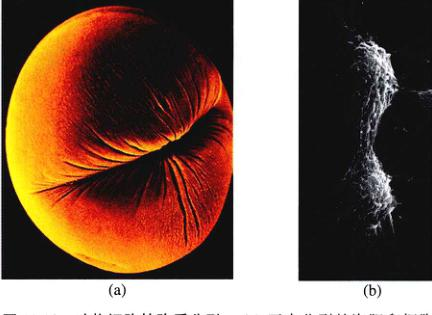
图 11.13 动物细胞的胞质分裂 (a) 正在分裂的卵细胞 (30 ×) 形成了一个卵裂沟。(b) 动物细胞质分裂完成。两个子细胞仍然由富含微管的细胞质细带连接。
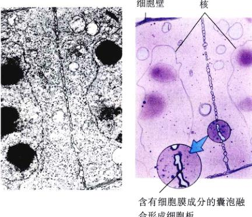
图 11.14 植物细胞的胞质分裂 在照片和示意图中，可以看到子细胞核之间形成了细胞板。一旦细胞板完全形成，也就意味着两个细胞的形成。
细胞分裂词汇
二分裂 (binary fission)：细胞直接分裂为相等或接近相等两部分的无性繁殖方式。细菌就是二均分裂。
着丝粒 (centromere)：染色体上约 220 个核苷酸长度的缢缩区域，由高度重复的 DNA 序列 (卫星 DNA) 组成。在有丝分裂期中，着丝粒连接两个姊妹染色单体且为着丝点的附着位点。
染色单体 (chromatid)：一条染色体复制后的两个拷贝之一，通过单个着丝粒与另一条相连。
染色质 (chromatin)：组成真核生物染色体的 DNA 与蛋白质复合物。
染色体 (chromosome)：细胞内携带基因的结构，在真核生物中由单个线性 DNA 分子与蛋白质结合而成。其 DNA 在 S 期复制，M 期分离。
胞质分裂 (cytokinesis)：核分裂后的细胞质分裂过程。
常染色质 (euchromatin)：细胞不分裂时染色体中伸展的部分，基因进行 RNA 转录。
异染色质 (heterochromatin)：染色体中始终保持凝缩状态因而不能转录 RNA 的部分。大部分着丝粒区属于异染色质。
同源染色体 (homologue)：在二倍体细胞中，带有相同基因的一对染色体之一。
着丝点 (kinetochore)：与着丝粒结合且在有丝分裂期附着微管的蛋白质盘，连接纺锤体与每条染色单体。
微管 (microtubule)：由微管蛋白亚单位组成的直径约 25nm 的中空圆柱，通过加减微管蛋白亚单位伸长或缩短。
有丝分裂 (mitosis)：复制的染色体分离形成两个遗传上一致的子核的分裂过程。一旦胞质分裂完成，将产生两个相同的子细胞。
核小体 (nucleosome)：真核生物染色体的基本包装单位，由 DNA 分子缠绕一簇组蛋白核心形成。染色质由像串珠一样的核小体长串组成。
11.4 细胞周期的精密调控
11.4.1 细胞周期调控的一般策略
在所有真核细胞中，细胞周期的过程在很大程度上是相同的。现在人体细胞周期的控制体系来源于十亿年前的原生生物。而今天，这种控制以本质上相同的方式在真菌和人体中起作用。
对细胞周期中的每个过程进行调控，目的是为了调整周期的持续时间，使得每个阶段都有足够的时间进行。从原理上讲，有许多方法可以达到这一目的，比如内部“时钟”的利用就可以使得每个时期的完成有足够的时间，这是许多生物体调控自己日常活动周期的方法。利用这种方式调控细胞周期的弊端是：不具可伸缩性。一种更灵活更灵敏的调节方法是：使得周期中的某一个时期的完成就是下个时期开始的触发器，就像接力赛一样，拿到接力棒的下一个才可以跑。不久之前生物学家还都认为调控细胞分裂周期的是这种机制。现在我们才认识到真核细胞实际是利用了一个独立的中心控制器来调控分裂过程的：在细胞周期的关键环节，进一步的过程都决定于中心的“进/停”开关 (“go/no-go” switches)，而这一开关又是受细胞的反馈调节的。
这个机制同工程师调控许多过程的方法是一样的。例如冬天屋里暖气每天的加热循环，当循环到达早上的“启动”检验点，感受器检测屋里的温度是否在设定的温度以下 (比如 70°F )，如果是，则自动调温器启动火炉，使房间升温，如果房间里的温度已经达到，则温控器不开启火炉。相似地，细胞周期的关键检验点通过细胞的反馈信号，如细胞大小和染色体情况，来启动或推迟循环下一个时期，使正在进行的时期能够有足够的时间完成。
Page 13 / 原始页码 209
调控系统的结构
真核生物细胞周期中有 3 个重要检验点 (checkpoint) (图 11.15)：
(1) G1 检验点：评估细胞生长 位于 G1 期末。在进入 S 期之前的这个检验点将决定细胞是进行分裂、推迟分裂或进入休眠期 (图 11.16)。研究人员首先在酵母的研究中发现了这个检验点，称为起始点 (START)。如果条件适合分裂，则细胞开始复制 DNA，进入 S 期。更复杂的真核生物，在 G1 检验点，如果环境条件不适合分裂则停止滞于 G1 期，或进入持久的 G0 期。
(2) G2 检验点：评估 DNA 是否成功复制 第二个检验点位于 G2 期末，触发 M 期。如果通过，细胞将开启许多分子过程，标志着有丝分裂的开始。
(3) M 检验点：评估有丝分裂 发生在这一期。第三个检验点触发有丝分裂和胞质分裂期的结束并开启 G1 期。
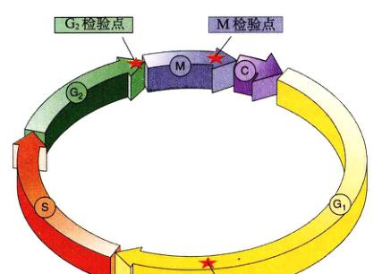
图 11.15 细胞周期控制 细胞使用集中控制系统，检测条件是否合适来决定是否通过 3 个关键的细胞周期检验点。
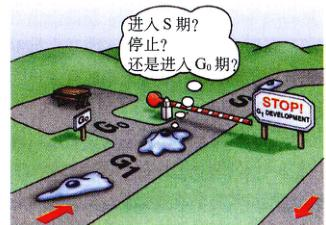
图 11.16 G1 检验点 从细胞得到的反馈将决定细胞周期是进入 S 期，是停止，还是退出并进入 G0 期长期静止。
11.4.2 细胞周期调控的分子机制
细胞如何精确地实现对分裂周期的中心调控？这个基本的机制是十分简单的，在检验点有一组对细胞环境十分敏感的蛋白质相互作用，触发周期中下一个事件。在这一相互作用中，有两个关键的蛋白参与：细胞周期蛋白 (cyclins) 和依赖细胞周期蛋白的蛋白激酶 (cyclin-dependant kinases, Cdks) (图 11.17)。
1) 细胞周期蛋白调控系统
依赖细胞周期蛋白的蛋白激酶 (Cdks) 是一种对关键链细胞酶及其他蛋白质中的丝氨酸和苏氨酸进行磷酸化的酶。例如在 G2 检验点，Cdks 将组蛋白、核膜及组成纺锤体的微管蛋白磷酸化，启动了这些细胞结构成分的活性，从而通过检验点进入有丝分裂。
细胞周期蛋白直接连接在 Cdks 上，使得 Cdks 具有酶的功能蛋白。之所以称为细胞周期蛋白是因为它们在每一次细胞周期中被破坏，而后又重新合成 (图 11.18)。在 G1、G2 检验点是由不同的细胞周期蛋白进行调节的。
(1) G2 检验点：在 G2 期中，细胞逐渐积累 G2 周期蛋白 (也称有丝分裂周期蛋白 mitotic cyclin)，该蛋白与 Cdks 结合形成一种 MPF (有丝分裂促进因子) 的复合物。开始时 MPF 没有使细胞通过 G2 检验点的活性，后来由于在另一细胞酶的磷酸化作用下，少量的 MPF 分子有了活性，那些有活性的 MPF 分子又反过来提高了使 MPF 磷酸化的酶活性，形成快速提高有活性 MPF 分子浓度的正反馈效应。直到有活性的 MPF 达到能触发有丝分裂的阈值时，G2 期便结束了。
MPF 播下了毁火自己的种子。M 期持续的时间取决于 MPF 的活性，因为其众多功能之一就是破坏细胞周期蛋白的酶类蛋白质。当有丝分裂进入中期末时，Cdks 的水平相对不变，但 G2 细胞周期蛋白的增加量开始减少，使得越来越少的 MPF 有活性，从而启动结束有丝分裂。
Page 14 / 原始页码 210
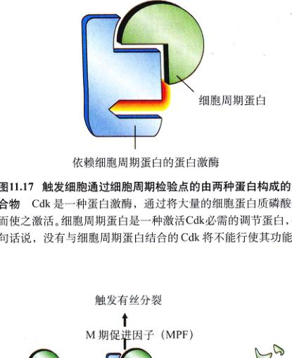
图 11.17 触发生细胞通过细胞周期检验点的由两种蛋白质构成的复合物 Cdk 是一种蛋白激酶，通过将大量的细胞蛋白磷酸化而使之激活。细胞周期蛋白是一种激活 Cdk 必需的调节蛋白，换句话说，没有与细胞周期蛋白结合的 Cdk 将不能行使其功能。
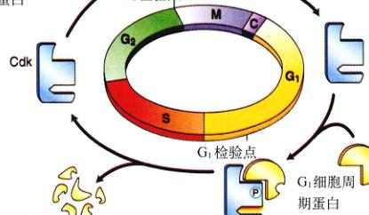
图 11.18 细胞周期调控是如何进行的 在细胞周期通过 G1、G2 检验点时，Cdk 都会与不同的细胞周期蛋白结合，从而激活不同的细胞过程。在每个时期结束时，细胞周期蛋白被降解，使 Cdk 活性消失，直到下一时期细胞周期蛋白出现。
阈值，促进细胞周期蛋白的产量增加，触发接下来的 DNA 复制和细胞分裂。
2) 多细胞真核生物的细胞周期调控
多细胞真核生物的细胞不像酵母菌细胞那样，能单独决定细胞分裂。如果细胞增殖没有严格控制，身体的组织结构就不能维持稳定，故只能允许一些特定的细胞在合适的时期发生分裂。哺乳动物组织培养和邻近细胞层细胞会长满整个培养平面，直到细胞边缘与邻近细胞接触才会停止分裂。如果清除一小块细胞，邻近细胞会迅速地重新填满这一区域，然后再次停止分裂。那么细胞是如何感知它们周围有空隙需要填充呢？每个正在生长的细胞需要结合少量调节信号，称为生长因子 (growth factor)，一种刺激细胞分裂的蛋白质 (如 MPF)。当邻近细胞将生长因子耗尽时，由于没有足够的生长因子，细胞分裂就无法动了。
3) 生长因子与细胞周期
回想一下第 7 章 (细胞与细胞的相互作用)，生长因子是通过启动细胞内部信号系统来工作的。以成纤维细胞 (fibroblast) 为例，其质膜上有许多受体，识别一种最初起作用的生长因子——血小板衍生生长因子 (platelet-derived growth factors, PDGF)。当 PDGF 与膜受体结合后，将启动细胞内信号放大链，刺激细胞分裂。PDGF 的发现是由于研究者观察到，在组织培养时，只有在生长环境中存在血清 (血液块析出后剩下的液体) 的时候，成纤维细胞才会生长、分裂、数量 (红细胞已被除去，而没有凝血的血液) 则不起作用。于是研究者假设缺少的血小板向血清中释放了成纤维细胞生长需要的一个或多个因子，最终这一因子被分离出来并命名为 PDGF。生长因子 (如 PDGF) 比细胞周期调控作用更强，否则细胞调控就会限制细胞分裂。如果有组织受伤，血液凝结，释放的 PDGF 就启动邻近细胞开始分裂，帮助治疗创伤。刺激细胞分裂只需要少量的 PDGF (大约 10-10 mol/L)。
(1) 生长因子的特性：目前分离的生长因子功能的蛋白超过 50 种 (表 11.2 列出了一小部分)，还有更多的生长因子存在。细胞表面的特定受体能识别各自的生长因子，因为其构型能与生长因子精确吻合，生长因子与其受体结合时，受体就会通过启动细胞内的事件而发生作用 (图 11.19)。细胞对特定生长因子的选择性取决于其表面的受体种类。有一些生长因子，如 PDGF 和表皮生长因子 (epidermal growth factor, EGF)，对很多种类的细胞都有作用；而有的生长因子只作用于特定类型的细胞。
(2) G1 检验点：一般认为 G1 检验点是用相似的方式调节的。在单细胞真核生物如酵母菌中，启动 DNA 复制的主要因素是细胞大小，酵母菌细胞必须以极快的速度生长、分裂，并通过检查细胞质体积与基因组大小的比，细胞质增加，而 DNA 的数量保持恒定，最后两者之比到达达标。
(2) G0 期：如果细胞丧失了合适的生长因子，将在细胞周期的 G1 检验点停止不前。我们先前讨论过，随着细胞停止分裂的停止，它们将停留在 G0 期，这非一生长状况与同期 (G1、S、G2 期) 有所不同。
Page 15 / 原始页码 211
表 11.2 哺乳动物细胞的生长因子
| 生长因子 |
作用范围 |
效 果 |
| 表皮生长因子 (EGP) |
广 |
在多种组织中刺激细胞增殖，对调节胚胎发育有重要作用 |
| 促红细胞生长素 |
窄 |
对红细胞体增殖及红细胞的成熟增殖是必需的 |
| 成纤维细胞生长因子 |
广 |
启动多种类型的细胞增殖，阻止许多种类的干细胞成熟；在胚胎发育中作为信号子 |
| 胰岛素样生长因子 |
广 |
刺激许多细胞类型的代谢；加强其他生长因子在促进细胞增殖中的效果 |
| 白细胞介素 -2 |
窄 |
在免疫反应中，触发激活的 T 淋巴细胞的分裂 |
| 有丝分裂促进因子 (MPF) |
广 |
调节细胞周期进入 M 期 |
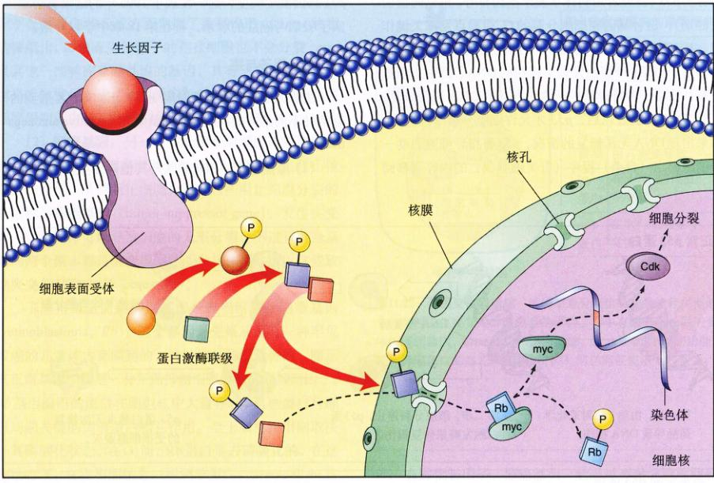
图 11.19 细胞增殖的信号通路 一旦附着了生长因子，细胞内的联级信号传递 (见第 7 章) 就开始进行，激活细胞核调节蛋白从而进一步触发细胞分裂。核蛋白 Rb 一旦磷酸化，导致另一种核蛋白 (myc) 释放，并开始刺激 Cdk 蛋白的产生。
型的细胞，比如神经生长因子 (nerve growth factor, NGF) 只促进特定种类的神经细胞生长，红细胞生长素 (erythropoietin) 只启动红细胞分裂。多数动物细胞需要各种不同的生长因子联合作用来克服多种抑制细胞分裂的因素。
进入 G0 期能力的，决定了不同的组织细胞周期时间长度的不同。肠上皮细胞每天分裂超过两次，以不断更新消化管；相反，肝细胞每一两年才分裂一次，它将在 G0 期停滞很长时间；成熟的神经细胞和肌肉细胞通常永远停留在 G0 期。
Page 16 / 原始页码 212
11.4.3 癌症与细胞增殖调控
细胞无限制不受控制的生长称为癌，将在第 18 章作全面阐述。不过在细胞分裂这一章，我们还是应该对它作一定的介绍，因为它在细胞找到了其中一个症结。癌症专家各自独立的研究反复证实了相同的基因，正式名称为 p53 (研究者用斜体字表示基因符号，用以同蛋白质区别)，这种基因在细胞分裂的 G1 检验点发挥关键作用，其产物 p53 蛋白，监测 DNA 的完整性，检查其是否无损伤。如果 p53 蛋白发现了损伤的 DNA，将会中止细胞分裂，启动一种特异的活性对损伤的 DNA 进行修复，直到 DNA 修复好以后，p53 才允许细胞分裂继续进行。如果出现 DNA 无法修复的情况，p53 将指导细胞启动一个细胞凋亡 (自杀) 程序 (有关细胞凋亡的内容请参阅第 17 章)。
通过中止损伤细胞分裂，p53 能阻止许多突变细胞的生长，因此被认为是一种抑癌基因 (tumor-suppressor gene) (尽管其活性并不限于预防癌症)。科学家发现，在已经检查过的绝大多数癌细胞中，p53 基因完全不存在或已损坏到不起作用！这是因为 p53 如果不起作用，癌细胞就可以不在 G1 检验点停留而反复地进行细胞分裂 (图 11.20)。为了验证这一点，科学家将正常细胞的 p53 蛋白转入长在培养皿中快速分裂的癌细胞，细胞很快停止分裂而死亡。
约翰·霍普金斯大学医学院 (Johns Hopkins University School of Medicine) 的科学家进一步报道吸烟会导致 p53 基因发生突变，这一发表于 1995 年的结果有力地证实了吸烟与肺癌的联系，将在第 18 章中予以介绍。
生长因子与癌
生长因子如何影响细胞周期呢？正如你已经看到的，有两种不同的方式：正效应和负效应 (positive and negative)。
(1) 原癌基因：PDGF 以及其他许多生长因子起正效应，刺激细胞分裂。它们通过帮助细胞周期蛋白形成，激活促使细胞分裂的基因来打开通过 G1 检验点的通道。
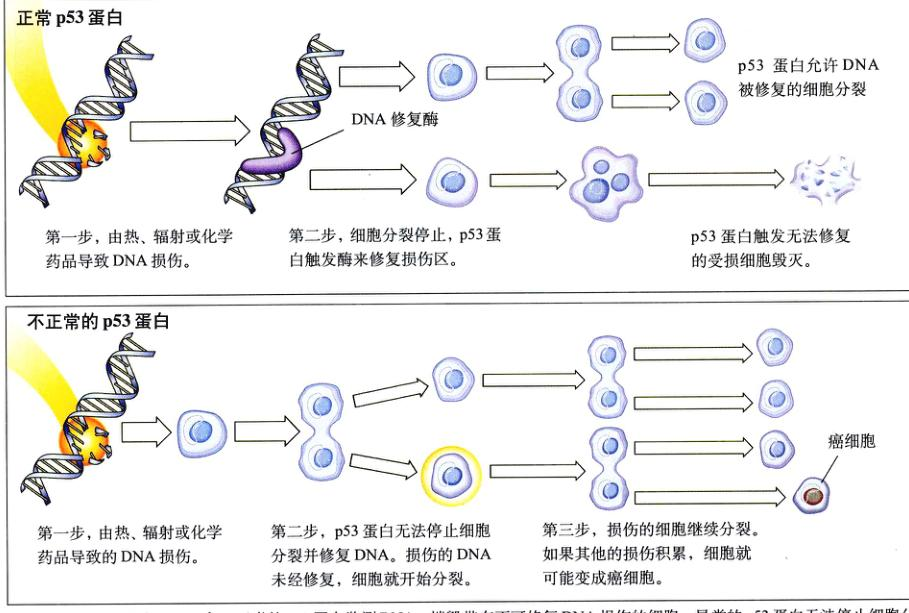
图 11.20 细胞分裂和 p53 蛋白 正常的 p53 蛋白监测 DNA，捕捉带有不可修复 DNA 损伤的细胞。异常的 p53 蛋白无法停止细胞分裂及对细胞进行修复，随着损伤细胞的繁殖，癌变产生。
- 正常 p53 蛋白：
- 第一步，由热、辐射或化学药品导致 DNA 损伤。
- 第二步，细胞分裂停止，p53 蛋白触发酶来修复损伤区。p53 蛋白允许 DNA 被修复的细胞分裂。
- 如果出现 DNA 无法修复的情况，p53 蛋白触发无法修复的受损细胞毁灭。
- 不正常的 p53 蛋白：
- 第一步，由热、辐射或化学药品导致的 DNA 损伤。
- 第二步，p53 蛋白无法停止细胞分裂并修复 DNA。损伤的 DNA 未经修复，细胞就开始分裂。
- 第三步，损伤的细胞继续分裂。如果其他的损伤积累，细胞就可能变成癌细胞。
Page 17 / 原始页码 213
通道，正常条件下刺激细胞分裂的基因有时称为原癌基因 (proto-oncogene)，因为突变使其表达量增加或活性增强而转变成癌基因 (oncogene，希腊语中 onco 表示癌症)，使得细胞过度增殖，这是癌症的特点。如果抑癌基因不起作用的话，即使只有一个基因突变 (即产生的是杂合子) 都可以导致癌症。用孟德尔遗传学的术语说，原癌基因的这种突变是显性的。
现在已知的原癌基因有 30 种，其中有些原癌基因在生长因子激发下活化很快。在当中，研究较为集中得是 myc, fos 和 jun，当它们过量表达时，都将使细胞不受限制地生长分裂。在一个正常细胞中，原癌基因 myc 似乎在调节 G1 检验点方面发挥了重要作用，如 myc 的表达被阻止，即使有生长因子的存在细胞也不会分裂。myc 及其他一些响应原癌基因的基因，具有一个重要的作用就是能激发另一类“延迟反应”基因，包括那些能产生细胞周期蛋白和 Cdk 蛋白的基因 (图 11.21)。
(2) 抑癌基因：另一类生长因子对细胞周期起负效应。它们通过阻碍细胞周期蛋白与 Cdks 结合来阻塞 G1 检验点的通道，从而阻止细胞分裂，这些阻止细胞分裂的基因称为抑癌基因 (tumor-suppressor gene)。发生突变时，它们同样可以导致细胞的无限分裂，不过只有当基因的两个副本都是突变型时才能发挥作用，所以这些致癌突变都是隐性的 (recessive)。
了解得最全面的抑癌基因是成视网膜细胞瘤基因 (retinoblastoma, Rb)。这个基因最先是从患有一种罕见眼癌的儿童体内克隆到的，这种病是隐性遗传的，暗示其正常基因产物是一种帮助抑制细胞分裂的抑制因子。Rb 基因编码的蛋白在细胞核中大量存在，这些蛋白与细胞周期关键的调节蛋白相互作用，至于如何作用则取决于其磷酸化状态。在 G0 期，Rb 蛋白是去磷酸化的，在这种状态下，它将牢固结合一组调节蛋白，如 myc 和 fos 这类细胞增殖必须的因子，阻断其活性，从而阻止细胞分裂 (见图 11.19)。一旦磷酸化，则 Rb 蛋白将释放其所结合的调节蛋白，使之能自由作用，促进细胞分裂。生长因子可减弱 Rb 蛋白磷酸化激活蛋白激酶的效应。从 Rb 蛋白的抑制下释放出来的细胞于是开始产生细胞周期蛋白和 Cdks，通过 G1 检验点，继续完成细胞周期。图 11.22 总结了几种通过突变引起癌症的基因种类。

图 11.21 myc 在触发细胞分裂过程中的作用 生长因子的加入，导致了 myc 基因的转录，从而迅速提高 myc 蛋白水平，使处于 G0 期的细胞进入 S 期，开始增殖。
与人体癌症有关的重要蛋白
| 生长因子在许多乳腺癌的子受体 细胞中含量增加 |
| Ras 蛋白 |
20%~30% 的癌症是由 ras 突变导致的 |
| Src 蛋白激酶 |
2%~5% 的癌症是由其突变导致 |
| Rb 蛋白 |
在 40% 的癌症中突变 |
| p53 蛋白 |
在 50% 的癌症中突变 |
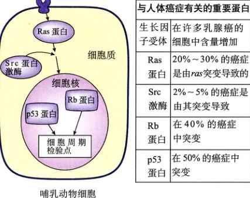
图 11.22 基因突变导致癌 编码细胞分裂信号传导途径关键部分的基因发生突变是许多癌症的诱因。其中有编码生长因子受体的原癌基因，如 ras 蛋白和蛋白激酶，如 src 能辅助 ras 的功能。破坏抑癌蛋白的突变，如 Rb 和 p53，同样能促使癌变的发生。
Page 18 / 原始页码 214
小 结
11.1 细菌分裂比真核生物简单得多
- 细菌进行简单的二均分裂。
- 复制产生的两个环状 DNA 分子附着在质膜的不同位点，分裂发生在这些位点之间。
11.2 染色体高度有序的结构
- 所有真核细胞都有染色体，但染色体的数目不同。
- 真核 DNA 与组蛋白及其他一些蛋白质结合复合物，并包装成染色体。
- 核小体由哪些成分组成？它们是如何参与 DNA 螺旋的？
- 什么是核型？分析染色体核型时是如何区分不同染色体的？
11.3 有丝分裂是细胞周期的关键阶段
- 在真核细胞中，DNA 在细胞周期的 S 期就已经完成复制，G2 期时期做为有丝分裂做好了最后的准备，与 G1 期一起，这 3 个时期构成了细胞周期的一部分，称为间期。
- 有丝分裂的第一步是前期，在这一时期，有丝分裂纺锤体器形成。
- 在有丝分裂的第二步中期，染色体排列成环状围绕细胞一周。
- 有丝分裂第三步后期开始时，连接姊妹染色单体的着丝粒分裂，使得姊妹染色单体彼此分开。
- 染色单体分离以后，被附着在其着丝粒上的微管拉向相对的两极。
- 在第四步也是最后一步，末期，有丝分裂器分解，核膜重新形成，染色体开始解螺旋。
- 当有丝分裂完成时，细胞分成两个，于是两套染色体经过有丝分裂最后进入了不同的子核。
- 对于成熟的真核细胞，一般说来细胞周期中哪一时期最长？
- 在 S 期中，染色体发生了什么变化？
- 前期的哪些变化与核糖体 RNA 有关？
- 什么信号标志着中期的开始？
- 在后期，什么分子机制导致了两极的运动？
- 描述末期的三个特点。
- 分析胞质分裂在动、植物细胞中的不同点。
11.4 细胞周期的精密调控
- 细胞周期的调节依靠两种蛋白，细胞周期蛋白和依赖细胞周期蛋白的蛋白激酶，直到细胞适合进入下一步时，它们才允许细胞通过关键的“检验点”。
- 细胞周期调控的失败会导致无法控制的细胞生长，是引发癌症的根源。
- G1、G2、M 检验点分别调控细胞周期哪一方面？细胞周期蛋白和依赖细胞周期蛋白的蛋白激酶是如何在这些检验点上参与细胞周期调控的？
媒体资源
- 原核生物
- 细胞分裂简介
- 染色体
- 实践活动：有丝分裂概述
- 植物细胞有丝分裂
- 有丝分裂
- 有丝分裂
- 实践活动：有丝分裂
- 学生研究：果蝇核分裂
- 技能测验：细胞周期
- 探索：细胞周期的调控
- 技能测验：细胞周期的控制